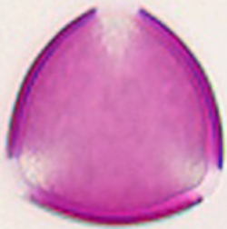
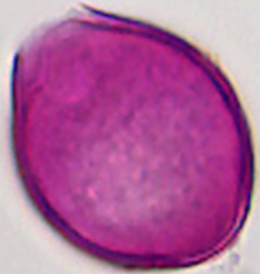
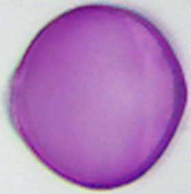
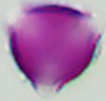

#1 prunus_pirus_typ ↔ malus_typ
former acer-cluster member without Acer · partner: 30 µm; 3-colp(or)aat; glad/rugulaat

prunus_pirus_typPrunus pirus (Pruim/Peer type)

malus_typMalus typ (appel type)
prunus_pirus_typ without AcerAcer rejected earlier. Reply: 1 same, 3 same, rest different
Anchor: 25 µm; tricolporaat; glad/zw.striaat
prunus_pirus_typ ↔ malus_typformer acer-cluster member without Acer · partner: 30 µm; 3-colp(or)aat; glad/rugulaat
prunus_pirus_typ
malus_typprunus_pirus_typ ↔ robinia_pseudoacaciaformer acer-cluster member without Acer · partner: 30 µm; tricolpaat; colpi aan de rand uitgefranst; scabraat
prunus_pirus_typ
robinia_pseudoacaciaprunus_pirus_typ ↔ rubus_typalready lookalike with P. padus; check vs Prunus/Peer type · partner: 25 µm; 3-colporaat; glad/striaat
prunus_pirus_typ
rubus_typprunus_pirus_typ ↔ prunus_paduswithin Prunus / type aggregate · partner: 25 µm; tricolporaat; glad/zw.striaat
prunus_pirus_typ
prunus_padusprunus_pirus_typ ↔ prunus_aviumwithin Prunus · partner: 37.3 µm–39.2 µm; tricolporaat; porendiameter dwars ca. 13,4 µm; striaat tot rugulaat
prunus_pirus_typ
prunus_aviumprunus_pirus_typ ↔ prunus_spinosawithin Prunus · partner: 39.1 µm–42.6 µm; tricolporoïd; striaat
prunus_pirus_typ
prunus_spinosaprunus_pirus_typ ↔ rosa_caninaRosaceae tricolporate striate? · partner: 30.4 µm–36.4 µm; tricolporaat; apertuurmembranen mittig korrelig geornamenteerd; striaat
prunus_pirus_typ
rosa_caninaprunus_pirus_typ ↔ crataegus_typRosaceae · partner: 40 µm; 3-colporaat; onduidelijk striaat
prunus_pirus_typ
crataegus_typprunus_pirus_typ ↔ spiraea_typRosaceae small · partner: 12 µm–16 µm; —; glad
prunus_pirus_typ
spiraea_typ